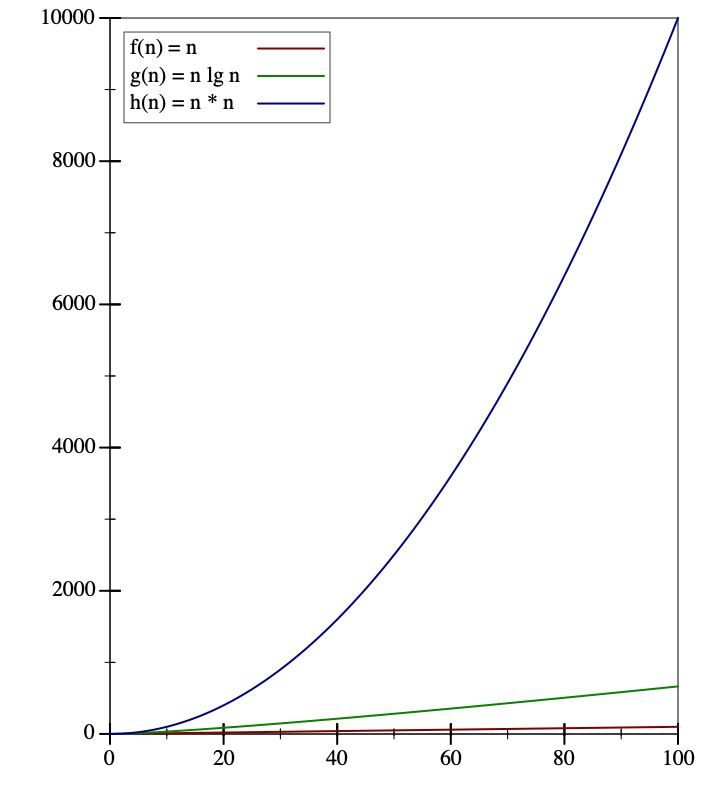

Lecture 28: Quicksort and Mergesort
Divide-and-conquer algorithms and their big-O behaviors
In the last lecture we considered two simple sorting algorithms: the natural insertion-sort algorithm for our standard ILists, and the natural selection-sort for ArrayLists. Both algorithms were straightforward applications of the design recipe to their respective data. But unfortunately, the performance of those algorithms was not very good: in the worst case, they took quadratic amounts of time proportionate to the size of their inputs.
Can we do better? The problem with both algorithms is that they’re too “forgetful”: they will repeat work, e.g. comparing the same pairs of numbers many times, and they don’t take advantage of a key property about comparisons. If we know that \(a < b\) and \(b < c\), then we do not need to compare \(a\) and \(c\), because by transitivity we already know the answer. Let’s see if we can use this fact to our advantage.
28.1 Quicksort: a usually fast way to sort
Suppose we could guess the median value (the “middle-most” value, such that half the values are less than it, and half are greater) from a list of values. We could use that fact to divide our data into a list of “small values” and a list of “big values” Once we’ve done that, we never need to compare any “small” value to any “big” value ever again, thereby cutting out a potentially huge number of wasteful comparisons!
28.1.1 Quicksort using swapspace
Index: 0 1 2 3 4 5 6 7 8 Data: [grape, cherry, apple, kiwi, watermelon, banana, honeydew, date, fig]
SOURCE: Index: 0 1 2 3 4 5 6 7 8 Data: [grape, cherry, apple, kiwi, watermelon, banana, honeydew, date, fig] == move all smaller values left, and all bigger values right ==> TEMP: Index: 0 1 2 3 4 5 6 7 8 Data: [cherry, apple, banana, fig, date, grape, kiwi, watermelon, honeydew]
<T> void quicksortCopying(ArrayList<T> arr, IComparator<T> comp);
Do Now!
Why not? What helper method will be needed?
// In ArrayUtils // EFFECT: Sorts the given ArrayList according to the given comparator <T> void quicksortCopying(ArrayList<T> arr, IComparator<T> comp) { // Create a temporary array ArrayList<T> temp = new ArrayList<T>(); // Make sure the temporary array is exactly as big as the given array for (int i = 0; i < arr.size(); i = i + 1) { temp.add(arr.get(i)); } quicksortCopyingHelp(arr, temp, comp, 0, arr.size()); } <T> void quicksortCopyingHelp(ArrayList<T> source, ArrayList<T> temp, IComparator<T> comp, int loIdx, int hiIdx) { ... }
Select the pivot element,
Partition: Copy all elements less than the pivot into the lower half of the temp list, copy all elements greater than the pivot into the upper half of the temp list, and place the pivot between them,
Copy the entire list back from temp to source, and
Sort the upper and lower halves of the list
// EFFECT: sorts the source array according to comp, in the range of indices [loIdx, hiIdx) <T> void quicksortCopyingHelp(ArrayList<T> source, ArrayList<T> temp, IComparator<T> comp, int loIdx, int hiIdx) { // Step 0: check for completion if (loIdx >= hiIdx) { return; // There are no items to sort } // Step 1: select pivot T pivot = source.get(loIdx); // Step 2: partition items to lower or upper portions of the temp list int pivotIdx = partitionCopying(source, temp, comp, loIdx, hiIdx, pivot); // Step 4: sort both halves of the list quicksortCopyingHelp(source, temp, comp, loIdx, pivotIdx); quicksortCopyingHelp(source, temp, comp, pivotIdx + 1, hiIdx); } // Returns the index where the pivot element ultimately ends up in the sorted source // EFFECT: Modifies the source and comp lists in the range [loIdx, hiIdx) such that // all values to the left of the pivot are less than (or equal to) the pivot // and all values to the right of the pivot are greater than it <T> int partitionCopying(ArrayList<T> source, ArrayList<T> temp, IComparator<T> comp, int loIdx, int hiIdx, T pivot) { int curLo = loIdx; int curHi = hiIdx - 1; // Notice we skip the loIdx index, because that's where the pivot was for (int i = loIdx + 1; i < hiIdx; i = i + 1) { if (comp.compare(source.get(i), pivot) <= 0) { // lower temp.set(curLo, source.get(i)); curLo = curLo + 1; // advance the current lower index } else { // upper temp.set(curHi, source.get(i)); curHi = curHi - 1; // advance the current upper index } } temp.set(curLo, pivot); // place the pivot in the remaining spot // Step 3: copy all items back into the source for (int i = loIdx; i < hiIdx; i = i + 1) { source.set(i, temp.get(i)); } return curLo; }
28.1.2 Quicksort in place
Index: 0 1 2 3 4 5 6 7 8 Data: [grape, cherry, apple, kiwi, watermelon, banana, honeydew, date, fig]
Index: 0 1 2 3 4 5 6 7 8 Data: [-----, cherry, apple, kiwi, watermelon, banana, honeydew, date, fig]
curLo curHi
v v
Index: 0 1 2 3 4 5 6 7 8
Data: [-----, cherry, apple, kiwi, watermelon, banana, honeydew, date, fig] curLo curHi
v v
Index: 0 1 2 3 4 5 6 7 8
Data: [-----, cherry, apple, kiwi, watermelon, banana, honeydew, date, fig] curLo curHi
v v
Index: 0 1 2 3 4 5 6 7 8
Data: [-----, cherry, apple, kiwi, watermelon, banana, honeydew, date, fig] curLo curHi
v v
Index: 0 1 2 3 4 5 6 7 8
Data: [-----, cherry, apple, fig, watermelon, banana, honeydew, date, kiwi] curLo curHi
v v
Index: 0 1 2 3 4 5 6 7 8
Data: [-----, cherry, apple, fig, watermelon, banana, honeydew, date, kiwi] curLo curHi
v v
Index: 0 1 2 3 4 5 6 7 8
Data: [-----, cherry, apple, fig, watermelon, banana, honeydew, date, kiwi] curLo curHi
v v
Index: 0 1 2 3 4 5 6 7 8
Data: [-----, cherry, apple, fig, date, banana, honeydew, watermelon, kiwi] curLo curHi
v v
Index: 0 1 2 3 4 5 6 7 8
Data: [-----, cherry, apple, fig, date, banana, honeydew, watermelon, kiwi] curHi curLo
v v
Index: 0 1 2 3 4 5 6 7 8
Data: [-----, cherry, apple, fig, date, banana, honeydew, watermelon, kiwi]Do Now!
What kind of loop should be used?
// Returns the index where the pivot element ultimately ends up in the sorted source // EFFECT: Modifies the source list in the range [loIdx, hiIdx) such that // all values to the left of the pivot are less than (or equal to) the pivot // and all values to the right of the pivot are greater than it <T> int partition(ArrayList<T> source, IComparator<T> comp, int loIdx, int hiIdx, T pivot) { int curLo = loIdx; int curHi = hiIdx - 1; while (curLo < curHi) { // Advance curLo until we find a too-big value (or overshoot the end of the list) while (curLo < hiIdx && comp.compare(source.get(curLo), pivot) <= 0) { curLo = curLo + 1; } // Advance curHi until we find a too-small value (or undershoot the start of the list) while (curHi >= loIdx && comp.compare(source.get(curHi), pivot) > 0) { curHi = curHi - 1; } if (curLo < curHi) { swap(source, curLo, curHi); } } swap(source, loIdx, curHi); // place the pivot in the remaining spot return curHi; }
// In ArrayUtils // EFFECT: Sorts the given ArrayList according to the given comparator <T> void quicksort(ArrayList<T> arr, IComparator<T> comp) { quicksortHelp(arr, comp, 0, arr.size()); } // EFFECT: sorts the source array according to comp, in the range of indices [loIdx, hiIdx) <T> void quicksortHelp(ArrayList<T> source, IComparator<T> comp, int loIdx, int hiIdx) { // Step 0: check for completion if (loIdx >= hiIdx) { return; // There are no items to sort } // Step 1: select pivot T pivot = source.get(loIdx); // Step 2: partition items to lower or upper portions of the temp list int pivotIdx = partition(source, comp, loIdx, hiIdx, pivot); // Step 3: sort both halves of the list quicksortHelp(source, comp, loIdx, pivotIdx); quicksortHelp(source, comp, pivotIdx + 1, hiIdx); }
28.1.3 Runtime analysis of quicksort
The runtime for swap is simple: it performs two reads and two writes, so \(T_{swap}(n) = 4\), regardless of the size of the input.
- The runtime for partition depends on the size of the interval \(n = hiIdx - loIdx\). It checks every item in that range against the pivot, and potentially swaps all of them. So
\begin{equation*}\begin{aligned} T_{partition}^{best}(n) &= n \\ T_{partition}^{worst}(n) &= 3n \end{aligned}\end{equation*}
In other words, the performance is always linear in the size of the interval. - The runtime for qucksortHelp depends on the size of the interval \(n = hiIdx - loIdx\) as well. But it has two recursive calls, whose runtimes depend on how good of a pivot we chose. In the best case, the pivot is very close to the median value, and divides the list exactly in half:
\begin{equation*}T_{quicksortHelp}^{best}(n) = T_{partition}^{best}(n) + 2T_{quicksortHelp}^{best}(n/2)\end{equation*}
In the worst case, the pivot is either the minimum or maximum, and divides the list into an empty piece and a nearly-complete piece:\begin{equation*}T_{quicksortHelp}^{worst}(n) = T_{partition}^{worst}(n) + T_{quicksortHelp}^{worst}(0) + T_{quicksortHelp}^{worst}(n-1)\end{equation*}
We’ve seen this latter recurrence before, when we determined the runtime of selection-sort: it’s \(O(n^2)\). The former recurrence is a trickier one. We can expand the recurrence a few times:\begin{equation*}\begin{aligned} T_{quicksortHelp}^{best}(n) &= T_{partition}^{best}(n) + 2T_{quicksortHelp}^{best}(n/2) \\ &= n + 2(T_{partition}^{best}(n/2) + 2T_{quicksortHelp}^{best}(n/4)) \\ &= n + 2(n/2 + 2(T_{partition}^{best}(n/4) + 2T_{quicksortHelp}^{best}(n/8))) \\ &= n + 2(n/2) + 4(n/4) + 8(n/8) + \cdots + n(1) \end{aligned}\end{equation*}
How many terms are there in the final expanded line? It’s however many times we can divide \(n\) in half before reaching one. This is familiar: it’s \(\log_2 n\). Accordingly, our runtime is \(T_{quicksortHelp}^{best}(n) = n\log_2 n\).
Runtime for quicksort |
| Best-case |
| Worst-case |
\(T_{quicksort}\) |
| \(\Omega(n \log_2 n)\) |
| \(O(n^2)\) |
\(M_{quicksort}\) |
| \(\Omega(1)\) |
| \(O(1)\) |
Do Now!
What inputs produce the best and worst case behaviors of quicksort?
Can we do better? Can we create a sorting algorithm that never has any bad cases?
28.2 Mergesort: sorting in a guaranteed better worst-case time
// In ArrayUtils // EFFECT: Sorts the provided list according to the given comparator <T> void mergesort(ArrayList<T> arr, IComparator<T> comp) { // Create a temporary array ArrayList<T> temp = new ArrayList<T>(); // Make sure the temporary array is exactly as big as the given array for (int i = 0; i < arr.size(); i = i + 1) { temp.add(arr.get(i)); } mergesortHelp(arr, temp, comp, 0, arr.size()); } // EFFECT: Sorts the provided list in the region [loIdx, hiIdx) according to the given comparator. // Modifies both lists in the range [loIdx, hiIdx) <T> void mergesortHelp(ArrayList<T> source, ArrayList<T> temp, IComparator<T> comp, int loIdx, int hiIdx) { ... }
Find the middle index of the current range. (If the range contains at most one item, stop.)
Recursively sort the lower range, and the higher range.
Merge the two ranges.
// EFFECT: Sorts the provided list in the region [loIdx, hiIdx) according to the given comparator. // Modifies both lists in the range [loIdx, hiIdx) <T> void mergesortHelp(ArrayList<T> source, ArrayList<T> temp, IComparator<T> comp, int loIdx, int hiIdx) { // Step 0: stop when finished if (hiIdx - loIdx <= 1) { return; // nothing to sort } // Step 1: find the middle index int midIdx = (loIdx + hiIdx) / 2; // Step 2: recursively sort both halves mergesortHelp(source, temp, comp, loIdx, midIdx); mergesortHelp(source, temp, comp, midIdx, hiIdx); // Step 3: merge the two sorted halves merge(source, temp, comp, loIdx, midIdx, hiIdx); }
Do Now!
Design the merge helper method to complete the algorithm above.
Index: 0 1 2 3 4 5 6 7 8 Data: [grape, cherry, apple, kiwi, watermelon, banana, honeydew, date, fig]
Index: 0 1 2 3 4 5 6 7 8 Data: [apple, cherry, grape, kiwi, watermelon, banana, date, fig, honeydew]
curLo curHi
SOURCE v v
Index: 0 1 2 3 4 5 6 7 8
Data: [apple, cherry, grape, kiwi, watermelon, banana, date, fig, honeydew]
curCopy
TEMP v
Index: 0 1 2 3 4 5 6 7 8
Data: [-----, ------, -----, -----, -----, ----, ----, ------, -----------] curLo curHi
SOURCE v v
Index: 0 1 2 3 4 5 6 7 8
Data: [apple, cherry, grape, kiwi, watermelon, banana, date, fig, honeydew]
curCopy
TEMP v
Index: 0 1 2 3 4 5 6 7 8
Data: [apple, ------, -----, -----, -----, ----, ----, ------, -----------] curLo curHi
SOURCE v v
Index: 0 1 2 3 4 5 6 7 8
Data: [apple, cherry, grape, kiwi, watermelon, banana, date, fig, honeydew]
curCopy
TEMP v
Index: 0 1 2 3 4 5 6 7 8
Data: [apple, banana, ------, -----, -----, ----, ----, ------, -----------] curLo curHi
SOURCE v v
Index: 0 1 2 3 4 5 6 7 8
Data: [apple, cherry, grape, kiwi, watermelon, banana, date, fig, honeydew]
curCopy
TEMP v
Index: 0 1 2 3 4 5 6 7 8
Data: [apple, banana, cherry, -----, -----, ----, ----, ------, -----------] curLo curHi
SOURCE v v
Index: 0 1 2 3 4 5 6 7 8
Data: [apple, cherry, grape, kiwi, watermelon, banana, date, fig, honeydew]
curCopy
TEMP v
Index: 0 1 2 3 4 5 6 7 8
Data: [apple, banana, cherry, date, fig, grape, honeydew, ----, ----------] curLo curHi
SOURCE v v
Index: 0 1 2 3 4 5 6 7 8
Data: [apple, cherry, grape, kiwi, watermelon, banana, date, fig, honeydew]
curCopy
TEMP v
Index: 0 1 2 3 4 5 6 7 8
Data: [apple, banana, cherry, date, fig, grape, honeydew, kiwi, watermelon]
// Merges the two sorted regions [loIdx, midIdx) and [midIdx, hiIdx) from source // into a single sorted region according to the given comparator // EFFECT: modifies the region [loIdx, hiIdx) in both source and temp <T> void merge(ArrayList<T> source, ArrayList<T> temp, IComparator<T> comp, int loIdx, int midIdx, int hiIdx) { int curLo = loIdx; // where to start looking in the lower half-list int curHi = midIdx; // where to start looking in the upper half-list int curCopy = loIdx; // where to start copying into the temp storage while (curLo < midIdx && curHi < hiIdx) { if (comp.compare(source.get(curLo), source.get(curHi) <= 0) { // the value at curLo is smaller, so it comes first temp.set(curCopy, source.get(curLo)); curLo = curLo + 1; // advance the lower index } else { // the value at curHi is smaller, so it comes first temp.set(curCopy, source.get(curHi)); curHi = curHi + 1; // advance the upper index } curCopy = curCopy + 1; // advance the copying index } // copy everything that's left -- at most one of the two half-lists still has items in it while (curLo < midIdx) { temp.set(curCopy, source.get(curLo)); curLo = curLo + 1; curCopy = curCopy + 1; } while (curHi < hiIdx) { temp.set(curCopy, source.get(curHi)); curHi = curHi + 1; curCopy = curCopy + 1; } // copy everything back from temp into source for (int i = loIdx; i < hiIdx; i = i + 1) { source.set(i, temp.get(i)); } }
28.2.1 Runtime analysis of mergesort
Do Now!
What is the runtime of mergesort, in the best and worst cases?
\begin{equation*}T_{mergesortHelp}(n) = 2T_{mergesortHelp}(n/2) + T_{merge}(n)\end{equation*}
\begin{equation*}T_{mergesortHelp}(n) = n\log_2 n\end{equation*}
Runtime for mergesort |
| Best-case |
| Worst-case |
\(T_{mergesort}\) |
| \(\Omega(n \log_2 n)\) |
| \(O(n\log_2 n)\) |
\(M_{mergesort}\) |
| \(\Omega(n)\) |
| \(O(n)\) |
28.3 Divide-and-conquer algorithms
The quicksort algorithm above is an example of what’s known as a divide-and-conquer algorithm. By splitting the input into nearly equally-sized chunks and processing them independently, we can compute answers in much better performance than if we processed the inputs strictly via structural recursion. Divide-and-conquer algorithms are an example of generative recursion: they require a leap of insight to figure out the best way to decompose the problem; once that insight is gained, the rest of the solution follows from the same design strategies we’ve been following all semester.
How much better, really, is \(O(n \log_2 n)\) than \(O(n^2)\)? For small values, there isn’t much difference. But when \(n = 256\), \(\log_2 n = 8\), which means \(O(n \log_2 n)\) is already over 60 times better than \(O(n^2)\). For \(n = 2^{10} = 1024\), that factor improves to over 100; for \(n = 2^{20} = 1048576\), that factor improves to over 50000, and it keeps getting better. Conversely, for \(n = 2^{20}\), \(O(n \log_2 n)\) is only twenty times worse than \(O(n)\):

28.3.1 Time/space tradeoffs
Mergesort is another divide-and-conquer algorithm, and it gets a better worst-case behavior bound than quicksort. But to accomplish this, it requires the use of \(O(n)\) additional memory. This is a classic example of what’s known as a time/space tradeoff: frequently we can speed up algorithms by allowing them addtional space in which to store temporary results. (Conversely, if we are constrained for space, we can sometimes improve our memory usage by recomputing results as needed instead of storing them.) Many, many algorithms and their variations result from exploring this tradeoff in various ways; for more details, there are entire courses devoted to studying algorithms!
In the next lecture, we will see one more sorting algorithm, that again achieves \(O(n\log_2 n)\) worst-case time performance, but uses no additional storage. To accomplish this, we’ll make use of a novel data structure, which is of widespread utility (besides merely sorting efficiently!), and whose construction combines several of the data structures we’ve seen so far.
28.4 Discussion
We arrived at insertion-sort pretty much by following the design recipe for the IList data type.
We arrived at selection-sort by asking “could we improve things if only we allowed mutation?” The central insight for selection-sort was that we could build an in-place sorting algorithm that didn’t require reallocating so many intermediate results.
We arrived at quicksort by looking at selection-sort’s worst case behavior and asking, “couldn’t we avoid doing all those comparisons?” The central insight here is that because comparisons are transitive, we could pick a “middle-most value” and let it partition the data for us, and then we’d never have to compare any of the smaller numbers to any of the larger numbers.
We arrived at mergesort by looking at quicksort’s worst case behavior and asking, “could we ensure we never make a bad choice, and always split the list cleanly in half?” The central insight of mergesort was to do away with the pivot altogether, because the key to quicksort’s good behavior was the divide-and-conquer approach.